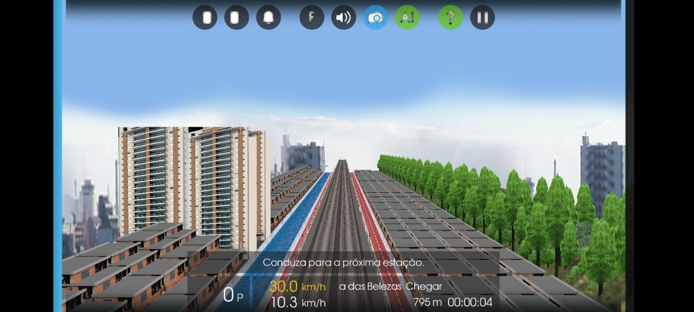
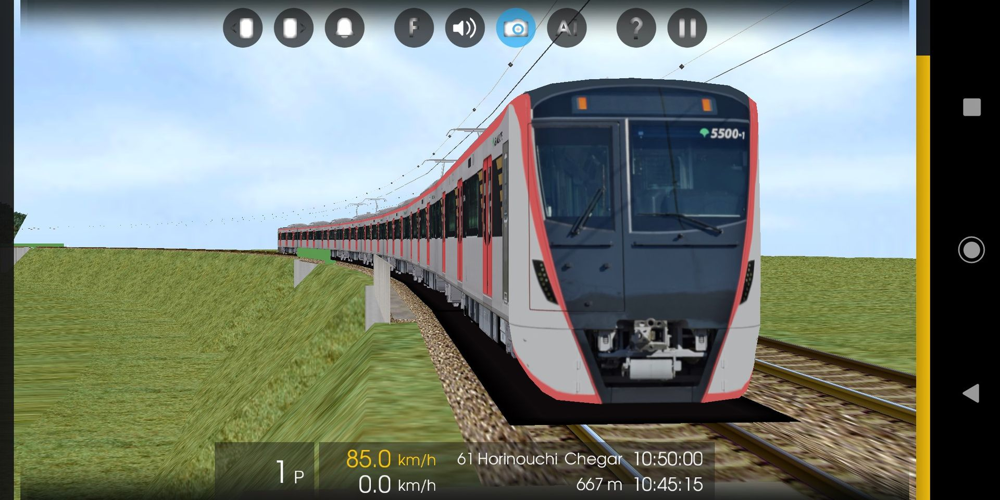
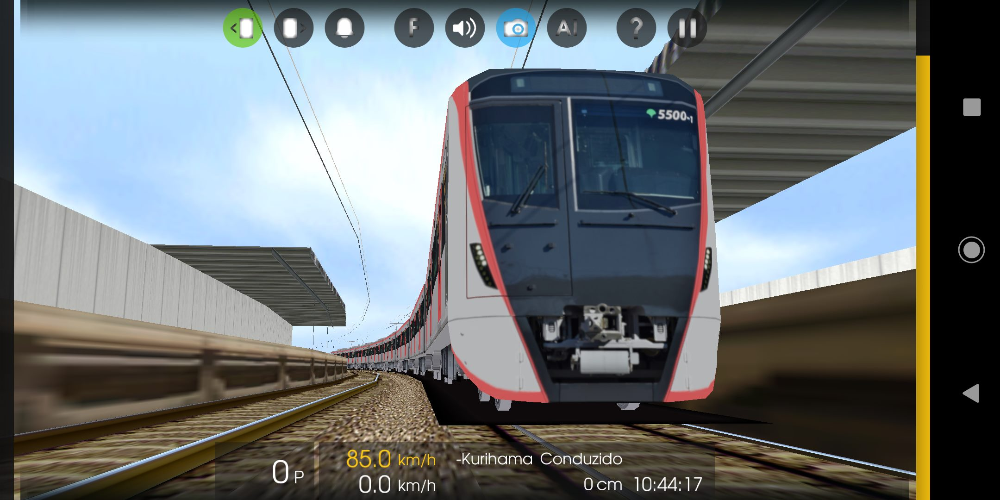
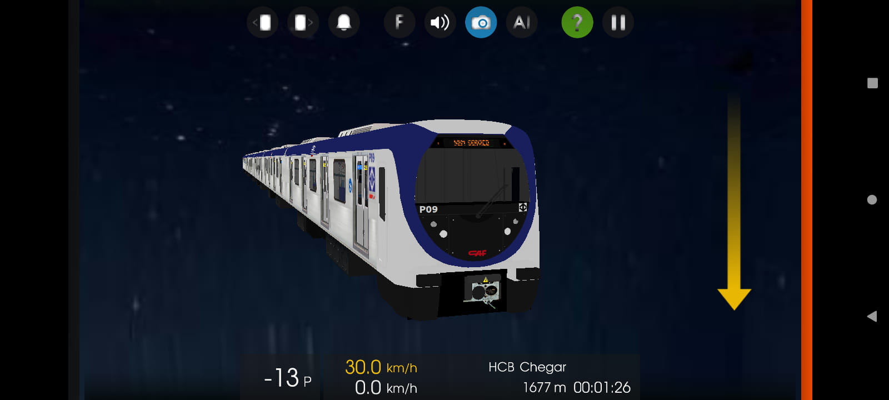
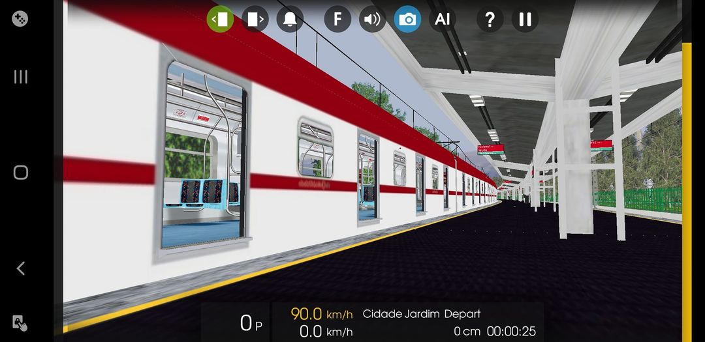
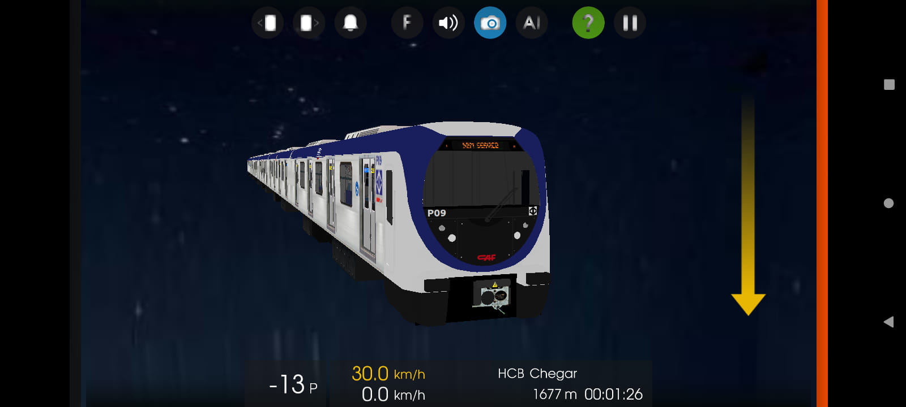
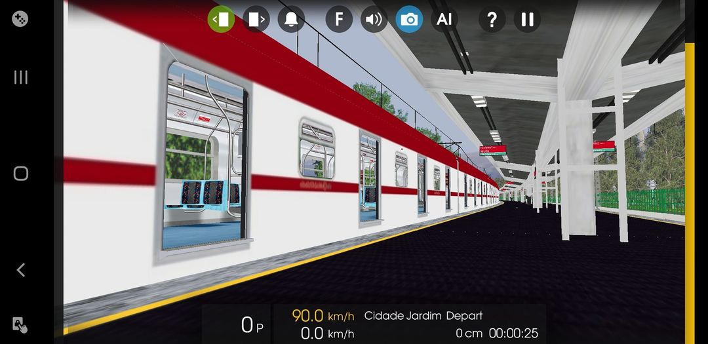
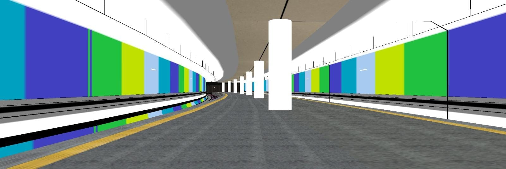
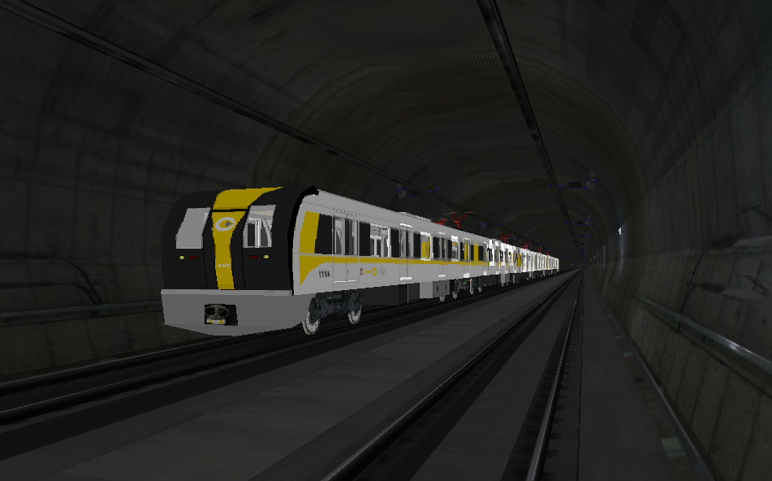

Linha 5 Lilás tomando forma. Autorização - OpenBVE Modernizações
Ramal Saracuruna v3? Pra Hmmsim?Em breve..
Olá pessoal! Tudo bem? Mais uma Novidade! Toei 5500, Em breve Será Lançado em uma nova Linha Da Keikyu, no momento estou trabalhando no som da Desaceleração.
 fala rapaziada ! tudo certo? entao, hoje a HRB ganha 2 novos membros para ajudar o ritmo da equipe, ambos passaram na prova e ficaram na media 90/100 ou 95/100. sejam bem vindos (Mr Frota F) e (Mr D588) !!! Ass: Gui Frota H
Fala Galera, hoje trago uma surpresinha pra vocês que em breve irá ser disponibilizado. HRB Evolui, Concorrência diminui e baba ovos aumenta.

bm dia :D sabe a tão esperada L5 MDZ? então temos a autorização bê já começamos os trabalhos com conversões de trens e rotas não peça, não está pronta! ai vai uma fotinha sexy 😏
 



Fala galera, hoje venho trazer um 9500 da CCR Fictício, ainda faltam poucas coisas, e quem sabe, terá lançamento deles? Fiquem ligados aqui na página para novas novidades!!! Pedro Mafersa.
Salve galera, pela infelicidade de muitos e felicidade de outros, Ramal Saracuruna Versão 3 + Realismo está temporariamente adiado a continuação do desenvolvimento da rota para dar a preferência da Linha 1 Laranja do Metrô Rio que ligará Uruguai até General Osório. Como muitos estão ansiosos pelo mesmo, o Mafersa Série 1000 está 95% dos sons prontos, Alstom Série 2000 está com 75% dos sons prontos e o CNR Série 4000 está pronto só dando uns ajustes nas texturas. Sobre os status da linha, está cerca de 35% pronta já com os Avisos Sonoros prontos e posicionados. Ass: Pedro Mafersa
Lançamento novo galera!! Série 2500 Animado Feito por Leonardo Santos Convertida pela equipe Rota feita por Wellington Arantes Convertida pela Equipe Link do download da descrição:
E quem disse que abandonamos o Projeto da L1 Rio? Estamos a todo vapor na Linha 1 Laranja do Metrô Rio, já foi posicionado o teto e os pilares da estação. Em Breve, mais novidades.
foi fundada pelo Pedro Mafersa Guilherme Italo em 2020

frota h versa 4 projeto feito por leonardo santos

frota p projeto feito por leonardo santos

hyundai rotem xg serie 400 projeto feito por leonardo santos